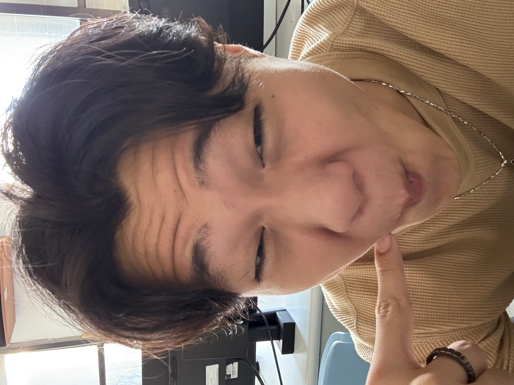

看見核心
事情再複雜，也先找出真正重要的問題，讓下一步更清楚。
嗨，我是 David。習慣在挑戰裡前進，在專業學習與運動之間找到平衡。比起停在舒適圈，我更喜歡看看自己還能走多遠。

我把生活看成一場長期修煉。面對新的挑戰，我會先冷靜看清問題，再把注意力放回能做的事上。每次跨過一道難關，不只是完成一件事，也是在重新認識自己的可能。
理性幫我釐清方向，同理心提醒我看見身邊的人。
事情再複雜，也先找出真正重要的問題，讓下一步更清楚。
壓力來的時候保持正向，專注當下，逐步找到突破口。
重視合作中的默契與理解，也願意為共同目標投入行動。
在一次次練習裡累積力量，也練習把承諾化為行動。
球場上要觀察、判斷，也要相信隊友。每個人的選擇，讓團隊一起往前。
「自律不是約束，— David
而是掌控生活的力量。」